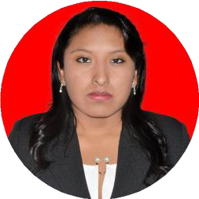

Hola, soy Wendy Fabiola Charcas Paredes
Licenciada en Ciencias de la Información — Mención en Archivología
Especialista en archivos, digitalización y gestión de información.

Sobre mí
Profesional en Ciencias de la Información con mención en Archivología, con experiencia en organización, clasificación y digitalización de archivos físicos y digitales, catalogación bibliográfica (Koha) y gestión de inventarios. Trayectoria en instituciones públicas y privadas, con compromiso, atención al detalle y confidencialidad. Motivada por la preservación, el acceso y la gestión eficiente de la información.
Competencias clave
Habilidades técnicas y personales orientadas a la gestión documental y la digitalización.
Técnicas
- Koha
- Digitalización de archivos
- Organización de archivos físicos y digitales
- Microsoft Excel
- Gestión de inventario
- Catalogación (Dewey/LC)
- Escaneo y control de calidad documental
Personales
- Organización
- Atención al detalle
- Confidencialidad
- Trabajo en equipo
- Adaptabilidad a cambios
- Comunicación efectiva
Experiencia laboral
Trayectoria en archivos, bibliotecas y digitalización.
-
Consultoría de servicio de digitalización de documentación de siniestros SOAT (sucursales Sucre y Potosí)
Univida S.A.
- Revisión física y prospectiva de inventarios de transferencia pendientes de las sucursales Potosí y Sucre.
- Verificación de inventarios y acondicionamiento documental de 50 cajas digitalizadas.
- Preparación física y limpieza documental (retiro de grapas y clips, reparación menor de hojas).
- Organización de lotes para escaneo.
- Uso de escáner profesional para conversión a imagen digital y control de calidad visual.
- Actualización de la base de datos en Excel para una gestión y búsqueda eficiente.
- Carga de archivos a la estructura de carpetas predefinida en la plataforma cloud corporativa.
-
Pasante en Archivo
Inmobiliaria Kantutani S.A.
- Organización y clasificación de documentos de diversos años.
- Archivado de documentos LOTE y FUNE, garantizando su integridad y disponibilidad.
- Apertura de nuevos files con foliado correlativo.
- Organización de empastados contables en los estantes asignados.
- Mantenimiento y conservación de archivos con técnicas de preservación preventiva.
-
Pasante en Biblioteca
Ministerio de Educación — Biblioteca y Librería
- Organización y catalogación integral de libros, documentos oficiales y recursos educativos (estándares Dewey y LC).
- Revisión y reparación de material bibliográfico.
- Catalogación de material bibliográfico en el sistema Koha.
- Digitalización de portadas de libros con escáneres de alta resolución.
- Inventario y control de stock mediante reportes periódicos.
- Adecuación de un espacio infantil, que aumentó en un 40 % las visitas de usuarios infantiles.
Otras experiencias
- Pasante en ArchivoMinisterio de Obras Públicas, Servicios y Vivienda (Liquidadora de AASANA) · Mayo – Noviembre 2024
- Becaria de la Biblioteca Especializada de la Carrera de EnfermeríaUniversidad Mayor de San Andrés — Facultad de Medicina, Enfermería, Nutrición y Tecnología Médica · Febrero – Diciembre 2023
- Auxiliar de ArchivoGobierno Autónomo Municipal de Palos Blancos · Julio – Diciembre 2022
- Auxiliar ContableEscobar & Asociados S.R.L. · Julio – Diciembre 2019
Educación
Licenciatura en Ciencias de la Información (Mención en Archivología)
Universidad Mayor de San Andrés — Facultad de Humanidades y Ciencias de la Educación
La Paz, Bolivia · 2025
Secretariado Ejecutivo
Instituto Tecnológico Superior “ISEC LA PAZ”
La Paz, Bolivia · En curso (2026)
Contador General
Instituto Técnico de Educación Bancaria
La Paz, Bolivia · 2019
Bachillerato en Humanidades
Instituto Americano
La Paz, Bolivia
Formación continua
Cursos, talleres y seminarios complementarios.
Conservación y digitalización de archivos
Centro de Estudios Aplicados Katabria S.R.L.
Enero 2024 · Archivología
Seminario: Lineamientos para la conservación preventiva — experiencias prácticas
UMSA FHCE — Carrera Ciencias de la Información
Septiembre 2023 · Archivología
Gestión de la información documental
UMSA FHCE
Agosto 2023 · Archivología
Gestión documental y gobierno electrónico
UMSA FHCE — Unidad de Gestión Documental Facultativa
Junio 2023 · Archivología
Seminario: Normativas legales que respaldan el acceso a la información en Bolivia
UMSA FHCE — Carrera Ciencias de la Información
Mayo 2023 · Archivología
Seminario virtual: Digitalización de material bibliográfico para bibliotecas
Sociedad Científica de Estudiantes en Ciencias de la Información
Mayo 2023 · Archivología
Manejo de documentación e información
Centro de Estudios Aplicados Katabria S.R.L.
Febrero 2023 · Archivología
Normativas legales que respaldan el acceso a la información en Iberoamérica y Europa
UMSA FHCE — Carrera Ciencias de la Información
Mayo 2022 · Archivología
Alfabetización archivística: el compromiso universitario
UMSA FHCE — Carrera Ciencias de la Información
Mayo 2021 · Archivología
Repositorios digitales DSpace
Cognit S.R.L.
Abril 2021 · Archivología
Decreto Supremo 181: Normas básicas del sistema de administración de bienes y servicios
Instituto de Educación Bancaria Nivel Profesional
Julio 2018 · Archivología
Inteligencia artificial en bibliotecas: retos y oportunidades
UMSA FHCE — Carrera Ciencias de la Información
Febrero 2024 · Bibliotecología
El rol del bibliotecario en la biblioterapia
UMSA FHCE — Carrera Ciencias de la Información
Enero 2024 · Bibliotecología
Inteligencia artificial en unidades de información
UMSA FHCE — Carrera Ciencias de la Información
Diciembre 2023 · Bibliotecología
Taller sobre el software AtoM
Centro de Estudiantes de la Carrera Ciencias de la Información
Octubre 2023 · Bibliotecología
Marketing en centros de información universitarios
Escuela Profesional de Bibliotecología y Ciencias de la Información
Noviembre 2021 · Bibliotecología
La mercadotecnia en bibliotecas públicas
Escuela Profesional de Bibliotecología y Ciencias de la Información
Noviembre 2021 · Bibliotecología
Foro debate: El rol de los centros de documentación
Instituto de Investigaciones y Estudios de Postgrado en Bibliotecología y Ciencias de la Información
Agosto 2018 · Bibliotecología
Congreso internacional y seminario hispano-boliviano en ciencias de la información
UMSA FHCE — Carrera de Bibliotecología y Ciencias de la Información
Junio 2018 · Bibliotecología
Jornada cultural “La Paz Lee”
UMSA FHCE
Abril 2018 · Bibliotecología
Propiedad intelectual, marcas y patentes
UMSA — Facultad de Derecho y Ciencias Políticas
Julio 2024 · Propiedad intelectual
Conversatorio: Los archivos y la restitución de la memoria a través del acceso a la información
Academia Escuela Superior Académica de Estrategias y Negocios
Junio 2024 · Propiedad intelectual
Análisis de propiedad intelectual: derechos de autor en la normativa y realidad boliviana
UMSA FHCE — Carrera Ciencias de la Información
Noviembre 2021 · Propiedad intelectual
Curso: La Ley 1178 en la administración y control de archivos
UMSA FHCE — Carrera Ciencias de la Información
Mayo 2024 · Ley 1178
Ley 1178 de Administración y Control Gubernamentales
Instituto de Educación Bancaria Nivel Profesional
Mayo 2017 · Ley 1178
II Coloquio de Investigación
UMSA FHCE — Carrera Ciencias de la Información
Julio 2023 · Investigación
I Coloquio de Investigación
UMSA FHCE — Carrera Ciencias de la Información
Marzo – Abril 2023 · Investigación
Elaboración de tesis con enfoque cualitativo, cuantitativo y mixto
UMSA FHCE — Carrera Ciencias de la Información
Julio 2021 · Investigación
XXXIV Reunión Anual de Etnología (contextos pandémicos)
Museo Nacional de Etnografía y Folklore
Diciembre 2020 · Investigación
Curso de Excel intermedio
Eventos Académicos Universitarios Consultora — FAPEB Bolivia
Junio – Agosto 2023 · Tecnología
Curso de mecanografía
Eventos Académicos Universitarios Consultora — FAPEB Bolivia
Abril – Mayo 2023 · Tecnología
Informática contable (Microsoft Office 2013, Facilito, Da Vinci, Orion y Mónica)
Instituto de Educación Bancaria Nivel Profesional
Febrero 2019 · Tecnología
Ciclo de conferencias — conversatorio: explorando nuevas perspectivas (psicología)
UMSA — Sociedad Científica de Estudiantes de Psicología
Septiembre 2023 · Otros
Curso taller internacional “Hablemos de violencia de género”
UMSA — Carrera de Enfermería (ARCU-SUR / MERCOSUR)
Julio 2023 · Otros
1.er Conversatorio Virtual Iberoamericano de Educación, Sociedad y Tecnología
UMSA
Julio 2023 · Otros
Curso de pedagogía para auxiliares de docencia
Carrera de Ciencia Política y Gestión Pública
Febrero 2022 · Otros
Detección de billetes falsos y técnicas de conteo
I.C.E.L.E. Instituto de Capacitación
Julio 2021 · Otros
Operaciones en caja
I.C.E.L.E. Instituto de Capacitación
Julio 2021 · Otros
Atención al cliente y plataforma
I.C.E.L.E. Instituto de Capacitación
Julio 2021 · Otros
Taller virtual de educación financiera y uso de la banca digital
Banco Unión S.A.
Noviembre 2020 · Otros
Jornada académica: Elaboración de planillas de sueldos y salarios
Andia Cuiza Consultores
Julio 2020 · Otros
Cajero bancario y atención al cliente
Business Consulting Group
Abril 2019 · Otros
Formación práctica para cajeros
Consultora Educativa Educación Continua
Abril 2019 · Otros
Curso integral de comercio exterior
Instituto de Educación Bancaria Nivel Profesional
Octubre 2018 · Otros
Preparación del flujo de efectivo y evolución del patrimonio para auditoría
Instituto de Educación Bancaria Nivel Profesional
Abril 2018 · Otros
Microfinanzas
Instituto de Educación Bancaria Nivel Profesional
Septiembre 2017 · Otros
Idioma originario aymara
Instituto de Educación Bancaria Nivel Profesional
Agosto 2017 · Otros
Curso especializado para cajeros de entidades financieras
Instituto de Educación Bancaria Nivel Profesional
Julio 2017 · Otros
Matemática aplicada en los negocios
Instituto de Educación Bancaria Nivel Profesional
Septiembre 2016 · Otros
Gestión y administración de sueldos y salarios, cargas y beneficios sociales
Instituto de Educación Bancaria Nivel Profesional
Junio 2016 · Otros
Cómo hablar en público / técnicas de oratoria
Centro Boliviano de Capacitación Integral
Mayo 2016 · Otros
Técnicas y hábitos de estudio para estudiantes de formación profesional
Instituto de Educación Bancaria Nivel Profesional
Abril 2016 · Otros
No se encontraron cursos con ese criterio.
Reconocimientos
Agradecimiento y admiración
Ministerio de Obras Públicas, Servicios y Vivienda (Liquidadora de AASANA)
Noviembre 2024
Reconocimiento a la destacada labor, compromiso y contribución a la Carrera de Enfermería
Carrera de Enfermería acreditada al ARCU-SUR del MERCOSUR
Junio 2023
Contacto
¿Trabajamos juntos? Escríbeme.
- wendycharcasp@gmail.com
- La Paz, Bolivia
- Descargar CV (PDF)
Disponible para oportunidades
Archivología, gestión documental, digitalización y bibliotecología.